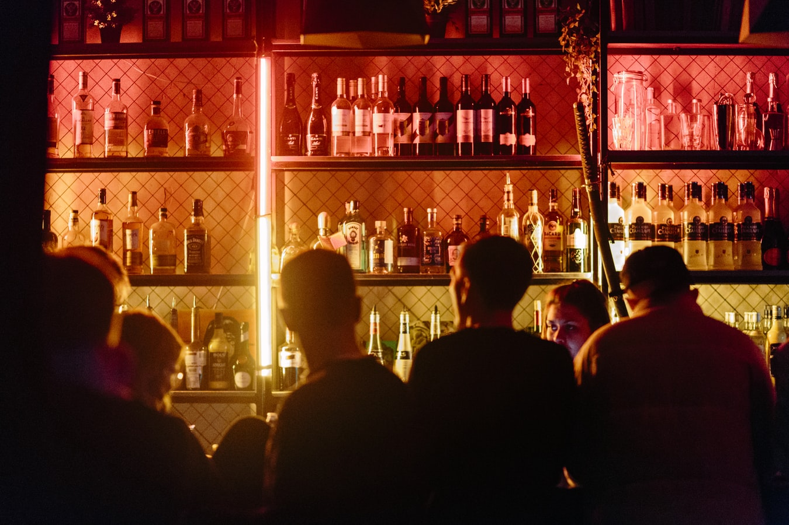

(Du kommer ind på opgaven vet at trykke på billedet ovenover)
Opgave: 02.04.02 responsive_site_v2
Værktøjer: HTML / CSS / Adobe Photoshop
Projekt type: Kodning / Design / Grids
I tema 2 blev vi introduceret til grundlæggende fagbegreber indenfor design og digitale brugergrænseflade, digital indholdsproduktion, digital kommunikation og responsivt webdesign. Udover det lærte vi hvordan man sætter en website op i HTML og CSS og gør den responsiv.
I det udvalgte opgave havde jeg fået tildelt underemnet brutalisme og derfor gjorde jeg splash billedet mere dynamisk og urolig ved at anvende liquify værktøjet i Photoshop. Jeg lagde splash billedet ind gennem CSS background-image, da billedet er lagt ind kun af designmæssige årsager, dvs. den skal ikke kunne findes af søgemaskiner. Udover det, er der også flere muligheder at manipulere billedet med (background-size og background-position). Jeg satte websiden op i et grid baseret layout vha. Af (display: grid) og delte det op i seks sektioner, dette gav hjemmesiden et mere konsistent udtryk. Derudover gjorde jeg hjemmesiden mere interaktiv og tilgængelig ved at lave et navigations-bar op i toppen, så det er mere overskueligt for brugeren. Sidst men ikke mindst lagde jeg et styletile ind for at vise mine designvalg ift. farver, billedstil, typografier med mere.
Orginale splashbillede, inden redigering
